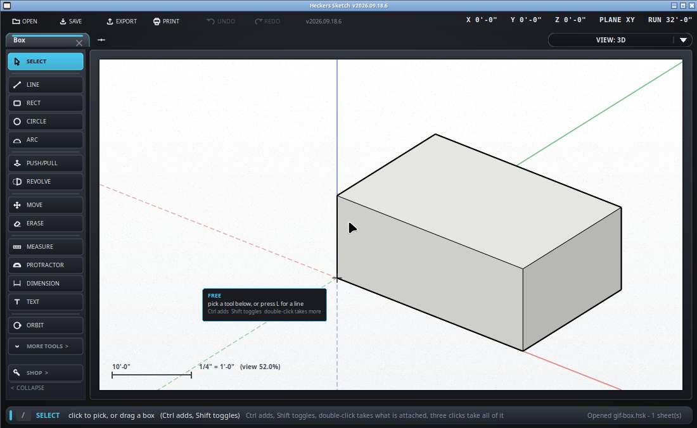

Put a measurement on the drawing.
Keyboard: D
Hover a circle and it lights with its diameter; hover an arc and it lights
with its radius, the center marked. Click, move round the curve to turn the
line to where it reads best, and click again. It is written
DIA 4'-0" or R 4'-0".
A corner of the little straight pieces a curve is drawn with takes the curve, not the corner. Its quadrant points, its center and an arc's two ends are still points - click one to measure from it to something else.
Typing a new size into a radius or a diameter does not resize the circle yet: draw the circle again at the size you want.

A dimension wants a corner, a midpoint, a center, or a point on an edge at each end. It will not lie across blank paper: a number measuring nothing cannot be driven by the drawing and will never update when the drawing changes, which makes it worse than no number at all.
In SketchUp the way round that is to draw a temporary line where you need it, dimension to that, and rub the line out afterwards - or to use the tape measure, which will measure anything anywhere and leave a guide behind.
Pick a dimension and type a new length, or use /resize. The
drawing moves to match the number - the geometry follows the dimension, not
the other way round - so a wall told it is 12'-6" becomes 12'-6".
Drag one with the move tool to shift the line off to one side without changing what it measures - it follows the mouse the same way it did when it was placed. A radius or a diameter sits on its curve and does not move off it.
In whatever the drawing is set to, rounded to the ROUNDED TO setting along
the bottom - sixteenths unless you say otherwise. /units swaps
between feet-and-inches and millimeters, and every dimension on the sheet
changes with it.